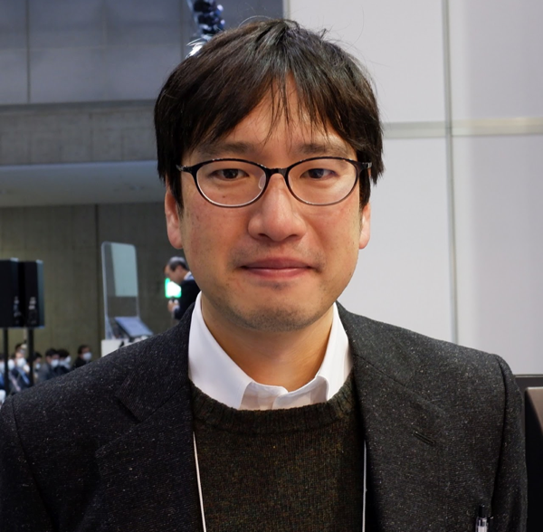

Purpose
This research aims to create an interdisciplinary academic field called "Materials Process Data Science" by integrating data science and materials process engineering.
Specifically:
- Comprehensively build a material-process linked database for nanoparticle synthesis
- Extract process characteristic factors that determine material structure and function from the constructed database
- Establish materials process informatics as a guide for creating high-performance nanomaterials
Members
 👤';">
👤';">
Takaaki Tomai
Professor
Frontier Research Institute for Interdisciplinary Sciences
Institute of Multidisciplinary Research for Advanced Materials
 👤';">
👤';">
Yusuke Hashimoto
Project Designated Associate Professor
Frontier Research Institute for Interdisciplinary Sciences
👤';">
Kazuyuki Iwase
Associate Professor
Institute of Multidisciplinary Research for Advanced Materials
Location & Contact
Address:
Tohoku University
Frontier Research Institute for Interdisciplinary Sciences
6-3 Aoba, Aramaki, Aoba-ku, Sendai, Miyagi 980-8578, Japan
Tohoku University
Frontier Research Institute for Interdisciplinary Sciences
6-3 Aoba, Aramaki, Aoba-ku, Sendai, Miyagi 980-8578, Japan
Tel: +81-22-795-5755
Fax: +81-22-795-5756
Access
🚇 By Subway
4-minute walk from Aobayama Station (North Exit)
🚖 By Taxi
Approximately 15 minutes from Sendai Station (about 2,000 yen)